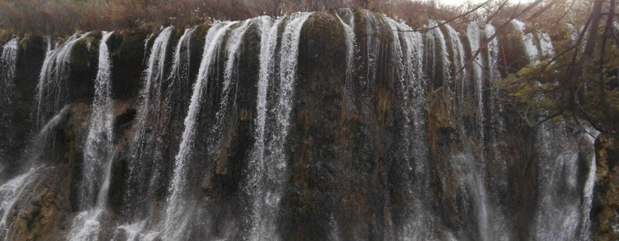

Real Healthy Water
Our Point-of-Use (POU) unit provides a viable alternative to Reverse Osmosis Technology. Our safe and healthy drinking water Technology will help sustain the bodies vitality. Learn about the health hazards in drinking Reverse Osmosis produced drinking water.
